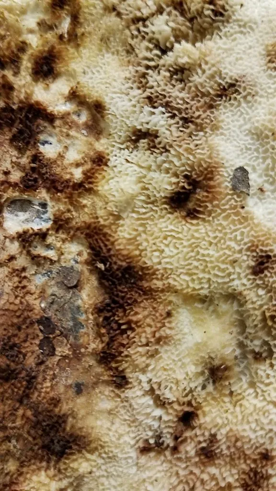

真菌 · 真菌界
茯苓 Wolfiporia extensa

生长在松树根部的药用真菌，地下菌核呈块状、外黑内白，是中医常用的健脾利湿药材，也是茯苓饼的原料。
- 分类
- 门担子菌门纲伞菌纲目多孔菌目科多孔菌科属茯苓属
- 栖息环境
- 松树根部及其周围的土壤中，靠分解松木生长
- 地理分布
- 中国云南、安徽、湖北、河南、福建等地有分布和栽培
- 保护级别
- 暂无评估（IUCN 未评估，可人工栽培）
物种志
茯苓是担子菌门多孔菌目的药用真菌，主要由地下的菌核和地上的子实体组成。菌核呈不规则的球状或块状，大小差别很大，小的如拳头，大的可达数十千克，表面黑褐色、粗糙多皱，内部白色或淡粉色，质地坚实；子实体平伏生长在菌核表面，呈蜂窝状，白色至淡黄色；孢子印白色。
茯苓多生于松树的根部，靠分解松木中的纤维素和木质素生长，在中国云南、安徽、湖北、河南、福建等地有分布和栽培。它的菌核是传统中药材，具有利水渗湿、健脾宁心的功效，中医常用于治疗水肿、脾虚等症；茯苓也是食品原料，茯苓饼、茯苓糕等传统点心都以它为料。茯苓已有成熟的人工栽培技术，通常用松木段接种培养。
形态与习性
- 菌核不规则球状或块状，外黑内白，质地坚实
- 子实体平伏于菌核表面，呈蜂窝状
- 药用菌核入药，利水渗湿、健脾宁心
- 食品茯苓饼、茯苓糕的原料
- 栽培松木段接种培养
- 采收期栽培 2–3 年后采挖菌核
- 经济价值药食两用，市场需求量大
趣味知识
- 茯苓的药用部分是地下巨大的菌核，外黑内白。
- 它多生长在松树根部，靠分解松木获取营养。
- 茯苓是传统中药材，也是茯苓饼等点心的原料。
- 茯苓已有成熟的人工栽培技术，用松木段接种培养。